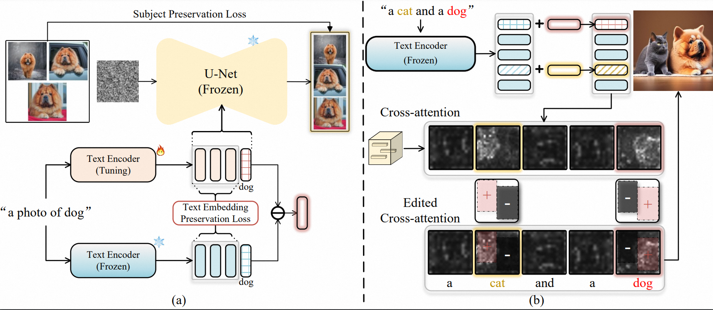

Cones 2 uses a simple yet effective representation to register a subject. The storage space required for each subject is approximately 5 KB. Moreover, Cones 2 allows for the flexible composition of various subjects without any model tuning. |
Abstract
Synthesizing images with user-specified subjects has received growing attention due to its practical applications. Despite the recent success in single subject customization, existing algorithms suffer from high training cost and low success rate along with increased number of subjects. Towards controllable image synthesis with multiple subjects as the constraints, this work studies how to efficiently represent a particular subject as well as how to appropriately compose different subjects. We find that the text embedding regarding the subject token already serves as a simple yet effective representation that supports arbitrary combinations without any model tuning. Through learning a residual on top of the base embedding, we manage to robustly shift the raw subject to the customized subject given various text conditions. We then propose to employ layout, a very abstract and easy-to-obtain prior, as the spatial guidance for subject arrangement. By rectifying the activations in the cross-attention map, the layout appoints and separates the location of different subjects in the image, significantly alleviating the interference across them. Using cross-attention map as the intermediary, we could strengthen the signal of target subjects and weaken the signal of irrelevant subjects within a certain region, significantly alleviating the interference across subjects. Both qualitative and quantitative experimental results demonstrate our superiority over state-of-the-art alternatives under a variety of settings for multi-subject customization.
Method
|  |
(a) Given few-shot images of the customized subject, we fine-tune the text encoder to learn a residual embedding on top of the base embedding of raw subject. (b) Based on the residual embeddings, we then propose to employ layout as the spatial guidance for subject arrangement into the attention maps. After that, we could strengthen the signal of target subjects and weaken the signal of irrelevant subjects. |
Comparison
Two customized subjects
 |
Three customized subjects
 |
Four customized subjects
 |
More challenging cases
Here we present diverse generated images of multiple customized subjects, further demonstrating the effectiveness of Cones 2.
 |